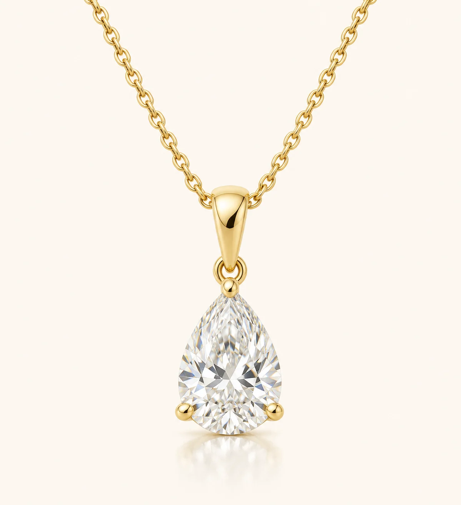

Aura · Bespoke enquiry
Pear Solitaire Pendant
A pear-shaped diamond with the point protected by its setting.
Choose your 18K gold colour and a diamond size from 1 to 5 ct, subject to availability.
Enquire about this design
Aura · Bespoke enquiry
A pear-shaped diamond with the point protected by its setting.
Choose your 18K gold colour and a diamond size from 1 to 5 ct, subject to availability.
Enquire about this design